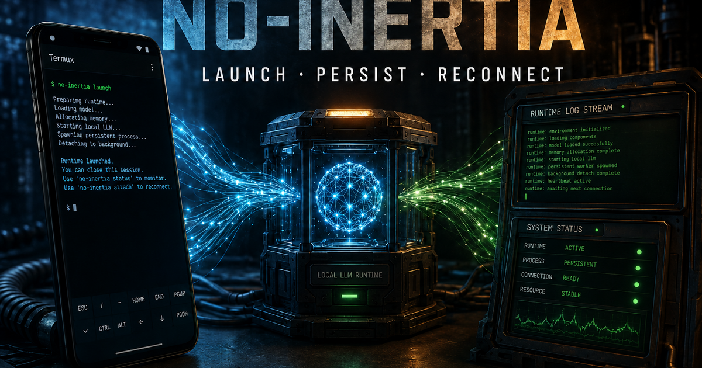

Local runtime experiment
Keep the process moving.
No-Inertia documents a Termux-oriented launcher for running a compact local language model as a background process while preserving output in a log.
Launch
Start the local model from the phone terminal.
Persist
Detach the process so the terminal session can close.
Reconnect
Return to the log and runtime state when needed.
This page documents the launcher concept. Runtime behavior depends on the local model, device, configuration and available memory.